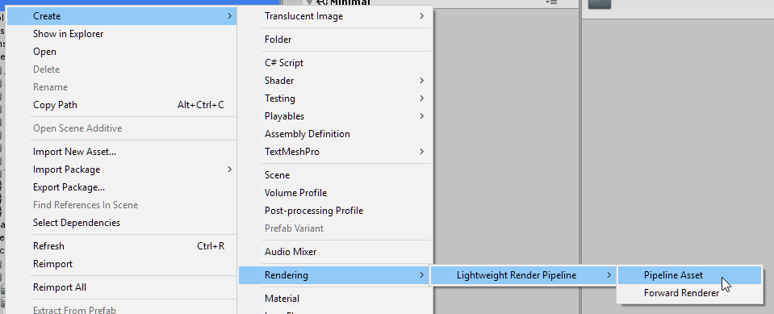
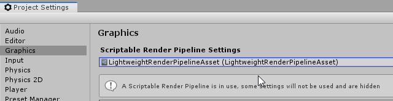
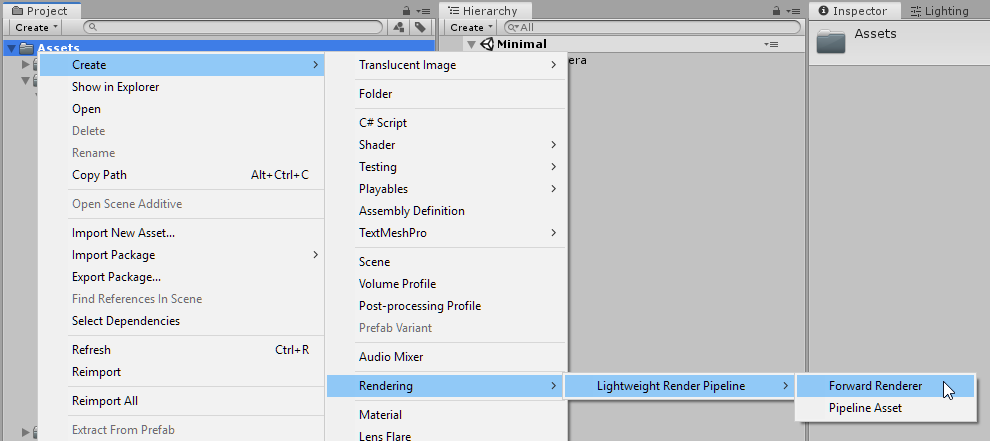
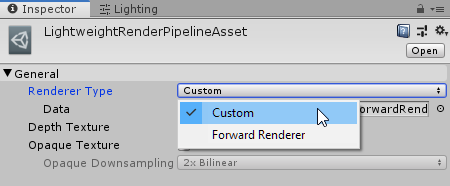
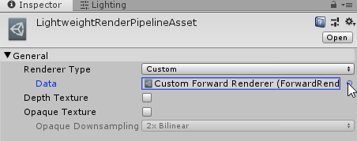
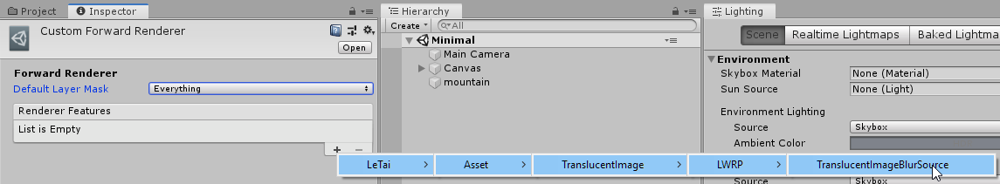

LWRP
Requirements
LWRP support was tested with LWRP version 5.7.2. LWRP on Unity 2018 is not supported at the moment, as it is still a preview package.
The files required for LWRP support can be found by importing the unity package at: Assets/Le Tai's Asset/TranslucentImage/LWRP support. They are not included by default as they would produce errors for projects without the LWRP package.
Tutorial
First, we need a LWRPipeline asset. You might already set up one for other purposes, in which case, you can skip the next 2 steps.
Start by creating an LWRPipeline asset like so:

Then assign it to your Graphics Settings:

Next, you need a Custom Forward Renderer Asset. You might also have this already, if not, create one:

And assign it to the LWRPipeline asset you just created:
 
Last, add Translucent Image Blur Source as a Render Feature of your Custom Forward Renderer 
Limitations
LWRP does not yet support multiple cameras overlay each other. Consequently, multiple blur layers for Translucent Images are also not available. Unity does have this functionality planned.
Only the Minimal Demo scenes work in LWRP project, as the material used in other scenes is from the standard pipeline, and the main Demo scene uses multiple cameras, which is also not supported by LWRP.